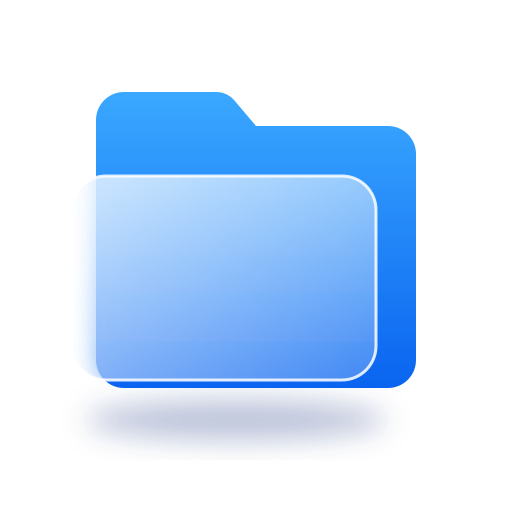
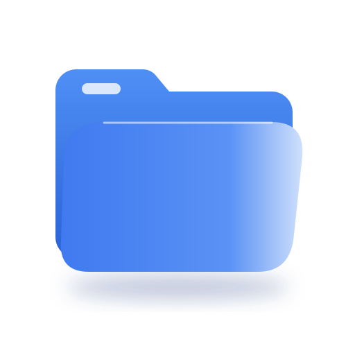
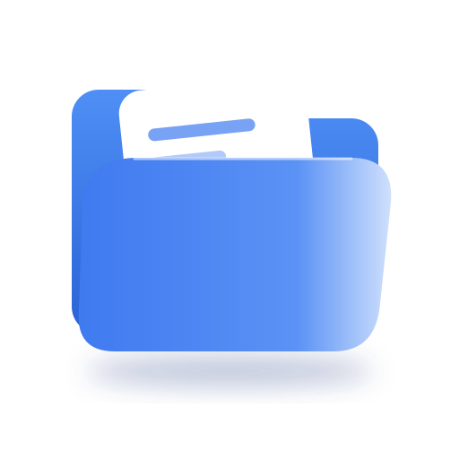
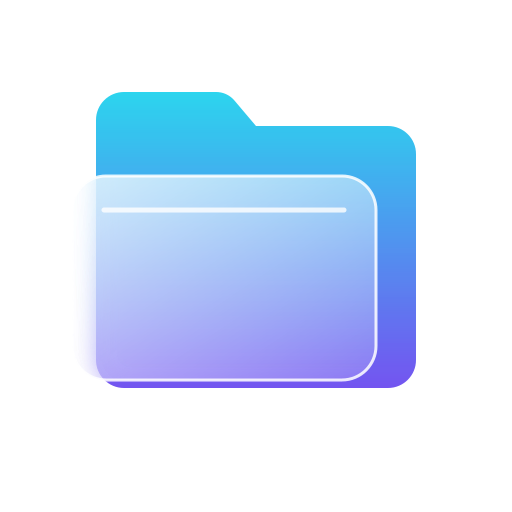

Folio — rodada 6 (vidro fosco)

G1 — vidro fosco sobre pasta azul

G2 — pasta aberta com aba de vidro
G3 — pasta clara, folha inclinada e vidro com linhas

G4 — pasta aberta com folha saindo

G5 — vidro em fundo escuro (neon suave)